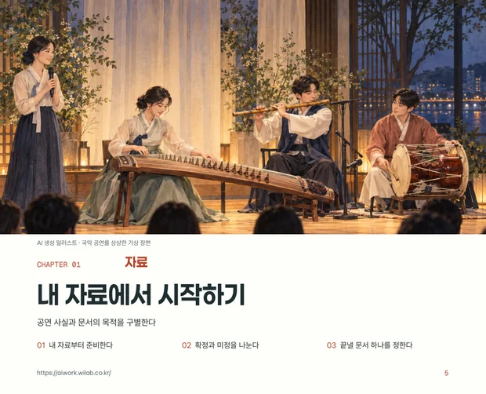
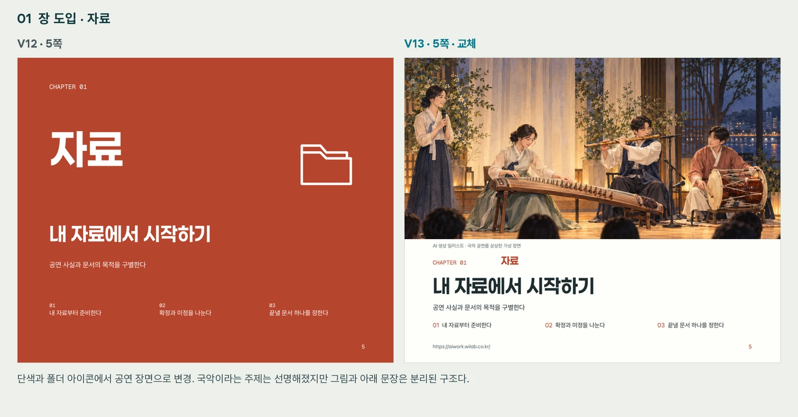

책과 워크북
개념·사례·따라 하기·직접 작성·검토를 한 흐름으로 구성한 50쪽 PDF입니다.
V13 PDF 보기 · 약 28MB ↗내 자료로 시작하는 콘텐츠 제작
강의 녹취록이 교육 자료로 발전한 실제 과정과 사용한 도구, 수정 기록을 공개합니다. 직접 따라 해보고, 조직의 자료로 함께 실습하고 싶다면 워크숍을 요청하세요.
지금 공개하는 사례는 ‘강의 녹취록 → 교육 자산’입니다.
제품·기업 소개서는 향후 적용 예시로 별도 소개합니다.

강의 녹취록 6개
V13 50쪽
01 / 먼저 결과를 확인하세요
같은 강의 자료에서 설명을 읽는 책,
직접 써보는 워크북, 시각 예제로 발전시켰습니다.
개념·사례·따라 하기·직접 작성·검토를 한 흐름으로 구성한 50쪽 PDF입니다.
V13 PDF 보기 · 약 28MB ↗원고·글꼴·이미지·조판 스크립트를 함께 보관해 수정과 재제작을 이어갑니다.
편집 자료 받기 · 약 23MB ↓가상 공연 사실표, 요청문, 검토 연습용 초안과 수정 기록을 제공합니다.
실습자료 10개 받기 ↓02 / 내 자료로 따라 해보세요
각 단계에서 할 일과 요청 예시를 확인하세요.
이번에 만들 결과물 하나부터 정하면 됩니다.
사용할 수 있는 강의 녹취록이나 업무 문서, 대상 독자와 교육 목적. 공개 실습에는 책에서 사용한 가상 공연 자료를 활용할 수 있습니다.
원래 설명의 의미를 살피며 개념·사례·질문·실습을 나눕니다. 설명이 빠진 부분과 추가로 확인할 정보도 표시합니다.
“이 녹취록에서 핵심 개념, 사례, 질문, 실습으로 발전시킬 부분을 구분해 줘. 각 항목의 근거가 되는 원문 위치도 함께 정리해 줘.”
확인할 결과 원문과 연결된 내용 목록
독자가 이미 아는 것과 새로 배워야 할 것을 구분합니다. 장마다 답할 질문과 직접 해볼 과제를 정합니다.
“이 자료를 처음 배우는 독자를 위한 목차를 제안해 줘. 장마다 핵심 질문, 사례, 직접 해볼 과제를 하나씩 연결해 줘.”
확인할 결과 독자·학습 목표·장별 구성
확인된 사실과 편집자가 보충한 설명을 구별합니다. 서비스 기능처럼 바뀌는 정보는 적용 조건과 확인 시점을 기록합니다.
“이 장의 원고를 작성해 줘. 원자료에 없는 설명은 보충 설명으로 구분하고, 모르는 정보는 추정하지 말고 확인할 항목으로 남겨 줘.”
확인할 결과 기준 원고·출처·미정 정보 목록
GitHub에 공개된 BookForge 스킬을 Codex에서 활용했습니다. 이 프로젝트에서는 가로형 워크북에 맞게 조판과 검수 스크립트를 확장했습니다.
“이 원고를 교육용 책자로 구성해 줘. 목차·장 도입·본문·실습 지면을 구별하고, 글자 크기·행간·여백을 일관되게 적용해 줘.”
확인할 결과 읽고 수정할 수 있는 PDF 초안
BookForge 저장소·설치 안내 ↗관계를 설명할 때는 도해를, 실제 행동을 보여줄 때는 장면을, 활용 모습을 보여줄 때는 문서 예제를 씁니다. 그림 속 글자 대신 편집 가능한 조판 텍스트를 배치합니다.
“이 설명에서 그림으로 이해를 도울 부분을 골라 줘. 도해, 작업 장면, 결과물 예제 중 적합한 형식과 이유를 제안해 줘.”
확인할 결과 본문과 역할이 연결된 시각 자료
원자료와의 의미 일치, 글자와 이미지 배치, 목차와 쪽수, 실습의 연결성을 확인합니다. 이전 판본은 보존하고 바꾼 이유를 기록합니다.
“이전 판본과 비교해 무엇이 좋아졌고, 어디가 아직 불편한지 보여줘. 수정 이유와 다음에 확인할 항목을 정리해 줘.”
확인할 결과 새 판본·변경표·다음 수정 목록
V12 → V13 변경표 받기 ↓03 / 결과와 판단을 함께 남깁니다
표지·본문·시각 자료를 바꿀 때마다
선택한 이유와 남은 개선점을 기록했습니다.

반복되는 장 도입 구성, 일부 지면의 큰 빈 공간, 그림과 실제 문구의 연결, 캡션 교정을 개선 과제로 남겼습니다.
04 / 사용한 도구와 스킬
사용자는 목적과 디자인 방향을 정하고 결과물을 보며 수정 의견을 냈습니다. Codex와 제작 스킬은 이를 원고·조판·이미지·비교 자료로 구현했습니다.
같은 과정, 다른 목적
자료·독자·검수 기준을 바꾸어 확장하는 구성 예시를 살펴보세요.
05 / 공공기관·기업 워크숍
교육 자료를 새로 만들거나, 쌓인 설명과 경험을 재사용하고 싶은 조직을 위한 실습입니다. 대상과 보유 자료, 만들고 싶은 결과물에 맞춰 진행 범위를 협의합니다.
ceo@wilab.co.kr ↗https://aiwork.wilab.co.kr/ ↗메일 앱에서 요청 내용을 확인하고 직접 보내세요.